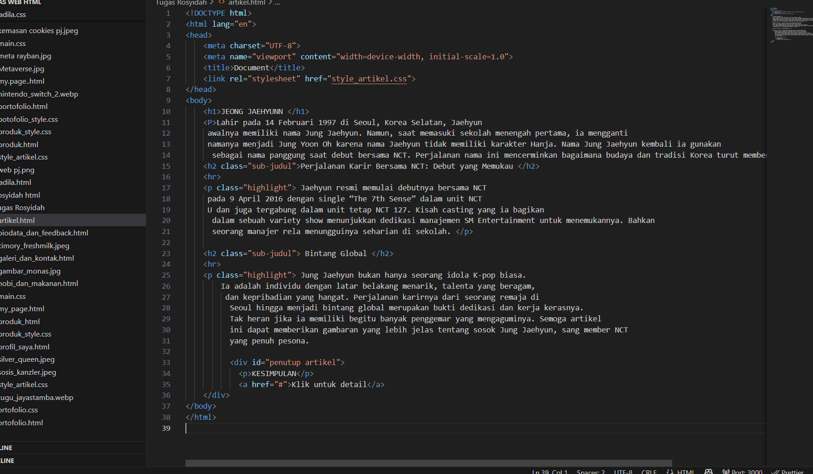

3D
proyek ini merupakan hasil dari pembelajaran 3d yang di ajarkan oleh pak anam, proyek ini sangat di butuhkan kesabaran dan ketelitian.

pemrograman web
Proyek ini merupakan hasil pembelajaran pemrograman web dengan menggunakan HTML dan CSS.Halaman ini menampilkan daftar produk unggulan dengan desain sederhana namun menarik.
Desaingrafis
proyek ini hasil dari pembelajaran desain grafis yang di ajarkan oleh pak sentot, proyek ini adalah proyek mandiri yang di berikan oleh pak sentot agar siswa - siswi bisa mengkreasikan ide nya dalam cover buku.